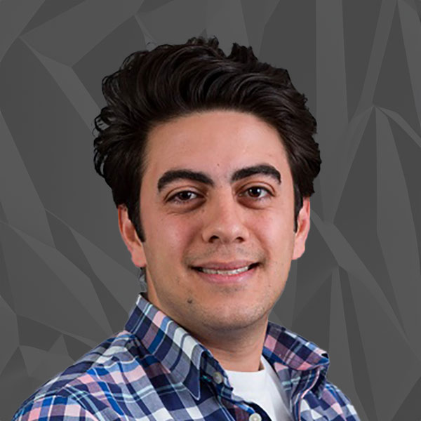

People
Faculty
Core Faculty

Edward Kavazanjian, Jr., Ph.D., P.E., D.GE, NAE
Regents Professor, Director of CBBG
Research: Biogeotechnical engineering, ground improvement, geotechnical earthquake engineering, waste containment system design, mechanical properties of municipal solid waste
Teaching: CEE 552, CEE 557, CEE 559
:
: 480-727-8566, : GWC 112B
Claudia Zapata, Ph.D., P.E.
Associate Professor, Deputy Director of CBBG
Research: Geotechnical engineering, environmental effects in pavement design
Teaching: CEE 452, CEE 553, CEE 554, CEE 598
:
: 480-727-8514, : GWC 124
Julian Tao, Ph.D.
Associate Professor
Research: Bioinspired burrowing mechanisms, bioinspired geosystems, smart and sustainable geosystems, soil behavior
Teaching: CEE 452, CEE 550, CEE 494/598
:
: 480-965-1108, : GWC 126

Hamed Khodadadi Tirkolaei, Ph.D.
Assistant Professor
Research: Sustainable Geotechnics, Biogeotechnical Engineering, Ground Improvement
Teaching: CEE 351, CEE 554
:
: 480-965-103, : GWC 120
Emmanuel Salifu, Ph.D.
Assistant Professor
Research: land-based engineering, environmental sustainability and soil/water engineering for agriculture and civil infrastructure
:
: GWC 128

Nariman Mahabadi, Ph.D.
Assistant Professor
Research: Bio-geotechnical engineering, flow and transport in porous media, hydro-geomechanics, energy geo-engineering, non-destructive testing and imaging techniques
:
: GWC 122
Research Professors
Jean Larson, Ph.D.
Assistant Research Professor
Education Director, CBBG
Research: Engineering Education
:
: 480-965-7804, : GWC 118

Jafar Razmi, Ph.D.
Research Professor
Research: Material behavior, infrastructural design and behavior under transportation, environmental, and other dynamic loads in geotechnical engineering.
Teaching: CEE 555
:
: 480-965-2543, : ISTB2
Lecturers
Chris Lawrence, Ph.D.
Lecturer Senior
Research:Vector mechanics, mastery based and collaborative learning, geotechnical engineering, unsaturated soil mechanics, advanced soil testing systems Teaching: CEE 494/598
:
: 480-965-2893, : CAVC 470
Affiliated Faculty

Leon A. van Paassen, Ph.D.
Associate Professor
Research: Engineering geology, geotechnical and geo-environmental engineering, environmental biotechnology, soil mechanics, ground improvement
Teaching: CEE 351, CEE 494, CEE 598
:
: 480-965-1075, : GWC 122
Faculty Emeritus
Sandra Houston, Ph.D., P.E.
Professor Emeritus
Research: Unsaturated soils, expansive and collapsible soils, arid region soils, foundations, modeling of unsaturated flow/deformation
: SANDRA.HOUSTON@asu.edu

William (Bill) Houston, Ph.D., P.E.
Professor Emeritus
Research: Geotechnical Engineering
Staff
Charlotte Bowens
CBBG Administrative Director
:
: (480) 965-7030, : GWC 112A
[Emma Buchanan] Project Coordinator
:
: (480) 965-2489, : GWC 112